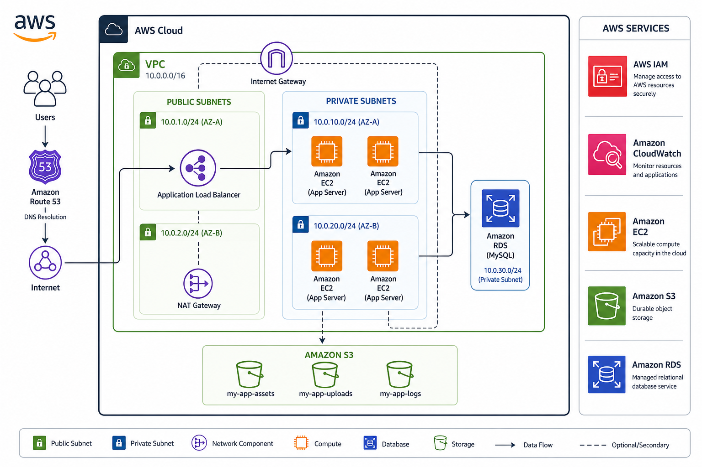
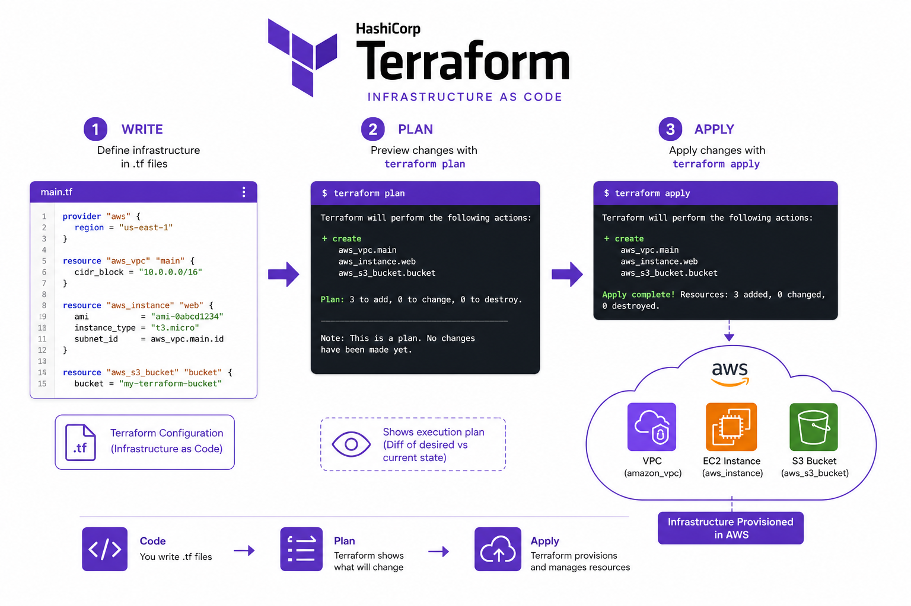

AWS & Terraform
Step-by-Step Learning Roadmap
A complete guide from beginner to professional — cloud fundamentals, infrastructure as code, certifications, and real-world projects.


Learning Overview
Estimated timeline for each track
AWS Roadmap — Step by Step
From cloud basics to Solutions Architect Professional
Cloud Fundamentals
Understand what cloud computing is — IaaS, PaaS, SaaS models, shared responsibility model, and AWS global infrastructure (Regions, Availability Zones, Edge Locations).
IAM — Identity & Access Management
Learn users, groups, roles, policies, MFA, and least-privilege access. IAM is the foundation of AWS security — master it before anything else.
Compute — EC2, Lambda, ECS
Launch virtual servers (EC2), run serverless functions (Lambda), and containerize apps with ECS/EKS. Understand instance types, AMIs, Auto Scaling, and Load Balancers.
Storage — S3, EBS, EFS
Object storage with S3 (buckets, versioning, lifecycle), block storage with EBS, and shared file storage with EFS. Learn storage classes and Glacier for archiving.
Networking — VPC, Route 53, CloudFront
Build isolated networks with VPC (subnets, route tables, NAT Gateway, Internet Gateway). Use Route 53 for DNS and CloudFront as a CDN.
Databases — RDS, DynamoDB, Aurora
Managed relational databases (RDS/Aurora), NoSQL with DynamoDB, caching with ElastiCache. Understand Multi-AZ, read replicas, and backup strategies.
Security, Monitoring & Compliance
CloudWatch for monitoring, CloudTrail for auditing, AWS Config for compliance, KMS for encryption, WAF & Shield for protection, and Secrets Manager.
Advanced Architecture & Professional
Design multi-tier, highly available, fault-tolerant systems. Master Well-Architected Framework pillars: Operational Excellence, Security, Reliability, Performance, Cost Optimization.
Terraform Roadmap — Step by Step
Infrastructure as Code from zero to production-ready
What is Infrastructure as Code (IaC)?
Understand why IaC matters — version control for infrastructure, reproducibility, automation, and drift detection. Compare Terraform vs CloudFormation vs Pulumi.
Install & Setup Terraform
Install Terraform CLI, configure AWS credentials (aws configure or environment variables), and understand the provider/plugin architecture.
Core Workflow — init, plan, apply, destroy
Master the Terraform lifecycle: write .tf files → terraform init → terraform plan (preview changes) → terraform apply (provision) → terraform destroy (cleanup).
Resources, Variables & Outputs
Define AWS resources (EC2, S3, VPC), use input variables for flexibility, and output values for sharing data between modules or displaying endpoints.
State Management
Understand terraform.tfstate — local vs remote state (S3 + DynamoDB locking). Learn state import, state mv, and why remote state is critical for teams.
Modules — Reusable Infrastructure
Create modules to package reusable infrastructure components. Use public modules from Terraform Registry (VPC module, EKS module) and write your own.
Provision AWS Infrastructure
Build a full AWS stack with Terraform: VPC → Subnets → EC2 → RDS → ALB → S3. Use count, for_each, and depends_on for complex deployments.
CI/CD & Production Best Practices
Integrate Terraform with GitHub Actions or GitLab CI. Use workspaces, policy as code (Sentinel/OPA), terraform fmt/validate in pipelines, and drift detection.
Certification Exam Fees
Official exam pricing (USD) — updated 2025/2026
| Certification | Level | Fee (USD) |
|---|---|---|
| Cloud Practitioner (CLF-C02) | Foundational | $100 |
| Solutions Architect – Associate (SAA-C03) | Associate | $150 |
| Developer – Associate (DVA-C02) | Associate | $150 |
| SysOps Administrator – Associate (SOA-C02) | Associate | $150 |
| Data Engineer – Associate (DEA-C01) | Associate | $150 |
| Solutions Architect – Professional (SAP-C02) | Professional | $300 |
| DevOps Engineer – Professional (DOP-C02) | Professional | $300 |
| Security – Specialty (SCS-C02) | Specialty | $300 |
| Machine Learning – Specialty (MLS-C01) | Specialty | $300 |
| Advanced Networking – Specialty (ANS-C01) | Specialty | $300 |
| Certification | Level | Fee (USD) |
|---|---|---|
| Terraform Associate (003) | Associate | $70.50 |
| Terraform Authoring & Operations Professional | Professional | ~$199 |
| Vault Associate | Associate | $70.50 |
| Vault Operations Professional | Professional | ~$199 |
| Consul Associate | Associate | $70.50 |